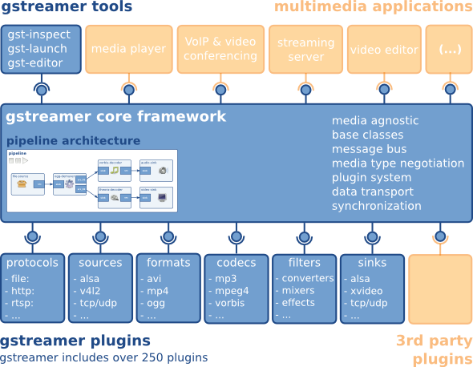

GStreamer 基础知识
概述
GStreamer is a the multi-platform, modular, open-source, media streaming framework.
GStreamer 是一个跨多平台，模块化的开源的媒体流处理框架。GStreamer 框架旨在使编写处理音频或视频或两者的应用程序变得容易。
它不仅限于音频和视频，还可以处理任何类型的数据流。该框架基于插件，这些插件将提供各种编解码器和其他功能。插件可以链接并排列在管道 pipeline 中。 而管道 pipeline 就定义了了数据流。
GStreamer 的核心功能是为插件、数据流和媒体类型处理/协商提供一个处理框架。它还提供了一些 API，用于使用各种插件编写应用程序。
https://gstreamer.freedesktop.org/documentation/application-development/introduction/gstreamer.html
an API for multimedia applications
a plugin architecture
a pipeline architecture
a mechanism for media type handling/negotiation
a mechanism for synchronization
over 250 plug-ins providing more than 1000 elements
a set of tools
GStreamer 插件可以分为以下几类:
protocols handling 协议处理
sources: for audio and video (involves protocol plugins)
formats: parsers, formaters, muxers, demuxers, metadata, subtitles
codecs: coders and decoders
filters: converters, mixers, effects, …
sinks: for audio and video (involves protocol plugins)

GStreamer 被打包为
gstreamer: the core package
gst-plugins-base: an essential exemplary set of elements
gst-plugins-good: a set of good-quality plug-ins under LGPL
gst-plugins-ugly: a set of good-quality plug-ins that might pose distribution problems
gst-plugins-bad: a set of plug-ins that need more quality
gst-libav: a set of plug-ins that wrap libav for decoding and encoding
a few others packages
多平台
GStreamer 适用于所有主要操作系统，例如 Linux、Android、Windows、Max OS X、iOS，以及大多数 BSD、商业 Unix、Solaris 和 Symbian。
它已被移植到广泛的操作系统、处理器和编译器。 它在所有主要硬件架构上运行，包括 x86、ARM、MIPS、SPARC 和 PowerPC，在 32 位和 64 位以及小端或大端上运行。
GStreamer 可以桥接到其他多媒体框架，以便重用现有组件（例如编解码器）并使用平台输入/输出机制：
Linux/Unix: OpenMAX-IL (via gst-omx)
Windows: DirectShow
Mac OS X: QuickTime
强大的核心库
基于图的结构允许构建任意的流水线 pipeline
基于 GLib 2.0 对象模型进行面向对象设计和继承
小于 500KB 的紧凑型核心库，约 65 K 行代码
多线程 pipeline 的构建简单透明
为插件和应用程序开发人员提供干净、简单和稳定的 API
极其轻量级的数据传递意味着高性能和低延迟
为核心和插件/应用程序开发人员提供完整的调试系统
时钟确保全局的数据流之间的的同步（音视频同步）
通过服务质量 (qos) 确保在高 CPU 负载下获得最佳质量
智能的插件架构
动态加载的插件提供 Element 和媒体类型，通过注册表缓存按需加载，类似于 ld.so.cache
Element 接口处理所有已知类型的源 source、过滤器 filter 和接收器 sinks
Capabilities 系统允许使用 MIME 类型和媒体特定属性验证元素兼容性
Autoplugging 使用 Capabilities系统自动完成复杂路径匹配
可以通过将 pipeline 转储到 .dot 文件并从中创建 PNG 图像来可视化 pipeline
资源友好的插件不会浪费内存
多媒体技术的广泛覆盖
GStreamers 功能可以通过新插件进行扩展。 下面列出的功能只是一个粗略的概述，使用了 GStreamers 自带的插件，不包括任何第三方插件。
容器格式 container formats: asf, avi, 3gp/mp4/mov, flv, mpeg-ps/ts, mkv/webm, mxf, ogg
流媒体 streaming: http, mms, rtsp
编码 codecs: FFmpeg, various codec libraries, 3rd party codec packs
元数据 metadata: native container formats with a common mapping between them
视频 video: various colorspaces, support for progressive and interlaced video
音频 audio: integer and float audio in various bit depths and multichannel configurations
可扩展的开发工具
gst-launch 是用于快速原型设计和测试的命令行工具，类似于 ecasound
有大量文档，包括部分完成的手册和插件编写者指南
每个模块中有大量测试程序和示例代码
可使用各种编程语言访问 GStreamer API
Installation
Linux
sudo apt-get update && apt-get install -y gstreamer1.0-tools gstreamer1.0-nice gstreamer1.0-plugins-bad gstreamer1.0-plugins-ugly gstreamer1.0-plugins-good libgstreamer1.0-dev libglib2.0-dev libgstreamer-plugins-bad1.0-dev
MacOS
可从下面的链接下载 https://gstreamer.freedesktop.org/documentation/installing/on-mac-osx.html?gi-language=c
安装后有如下文件:
/Library/Frameworks/GStreamer.framework/: Framework’s root path
/Library/Frameworks/GStreamer.framework/Versions: path with all the versions of the framework
/Library/Frameworks/GStreamer.framework/Versions/Current: link to the current version of the framework
/Library/Frameworks/GStreamer.framework/Headers: path with the development headers
/Library/Frameworks/GStreamer.framework/Commands: link to the commands provided by the framework, such as gst-inspect-1.0 or gst-launch-1.0
#include_path=/Library/Frameworks/GStreamer.framework/Headers
export PATH=$PATH:/Library/Frameworks/GStreamer.framework/Versions/1.0/bin
export LD_LIBRARY_PATH=$LD_LIBRARY_PATH:/Library/Frameworks/GStreamer.framework/Versions/1.0/lib
Get started
Tools
gst-inspect-1.0 显示可用的插件及 element 列表
gst-launch-1.0 运行 pipeline
gst-typfind
gst-codec-info
gst-device-monitor
gst-launch
查看测试视频
gst-launch-1.0 videotestsrc ! videoconvert ! autovideosink
捕获麦克风并显示声音的波形
gst-launch-1.0 -v -m autoaudiosrc ! audioconvert ! wavescope style=3 shader=2 ! videoconvert ! autovideosink
播放 mp4 文件
gst-launch-1.0 -v playbin uri=file:///`pwd`/material/talk.mp4
UDP 媒体流传输
# linux send h264 rtp stream:
gst-launch-1.0 -v ximagesrc ! video/x-raw,framerate=20/1 ! videoscale ! videoconvert ! x264enc tune=zerolatency bitrate=500 speed-preset=superfast ! rtph264pay ! udpsink host=127.0.0.1 port=5000
# Macos send h264 rtp stream:
gst-launch-1.0 -v avfvideosrc capture-screen=true ! video/x-raw,framerate=20/1 ! videoscale ! videoconvert ! x264enc tune=zerolatency bitrate=500 speed-preset=superfast ! rtph264pay ! udpsink host=127.0.0.1 port=5000
# receive h264 rtp stream:
gst-launch-1.0 -v udpsrc port=5000 caps="application/x-rtp, media=video, clock-rate=90000, encoding-name=H264, payload=96" ! rtph264depay ! decodebin ! videoconvert ! autovideosink
gst-inspect
view plugin videotestsrc
gst-inspect-1.0 videotestsrc
gst-discoverer
check video file codec
gst-discoverer-1.0 ../../../material/talk.mp4